Como o próprio nome sugere, as torres de suporte servem para ajudar o seu time, dando aprimoramentos como enxergar camuflados, estourar chumbos, conceder velocidade de ataque, alcance, e até gerar dinheiro.
A fazenda de bananas serve para gerar dinheiro a cada cacho de banana que cai da árvore.
| Caminhos | Vantagens |
|---|---|
| 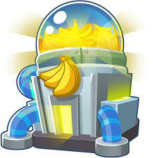 | O caminho de cima da fazenda de bananas transforma a fazenda em uma fábrica de bananas, deixando caixas de bananas que geram mais dinheiro ao serem coletadas. |
| 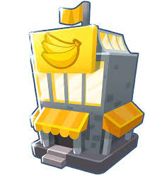 | O caminho do meio da fazenda de bananas transforma a fazenda em um banco que vai acumulando dinheiro a cada rodada, também libera uma habilidade ativável que te da 15 mil de dinheiro como um emprestimo. Na última melhoria a penalidade do emprestimo é removida. |
| 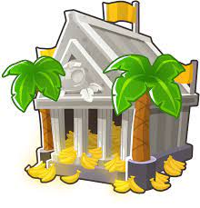 | O caminho de baixo da fazenda de bananas transforma a fazenda em um mercado central, que vai gerando dinheiro a cada segundo em um número limitado de vezes por rodada, também gera vida para a fonte e aumenta a receita de navios mercantes em 10%. |
A usina de espinhos posiciona espinhos na pista perto de seu alcance, é ótima como última linha de defesa.
| Caminhos | Vantagens |
|---|---|
| 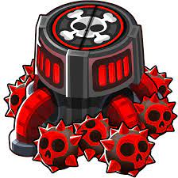 | O caminho de cima da usina de espinhos faz com que ela posicione super minas na pista, explodindo e causando grande dano ao contato. |
| 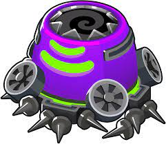 | O caminho do meio da usina de espinhos faz com que ela posicione espinhos mais rapidamente, cause mais dano a bloons classe MOAB e libere a habilidade ativável de encher a pista com espinhos. Na última melhoria ela posiciona regularmente espinhos em toda a pista. |
| 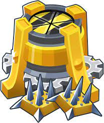 | O caminho de baixo da usina de espinhos aumenta seu alcance, permite ao jogador escolher o local do posicionamento de espinhos e posiciona espinhos duradouros que podem durar até mais de uma rodada e, na melhoria final, são quase permanentes. |
A vila macaco, de início, aumenta o alcance de todos os macacos no seu raio em 15%.
| Caminhos | Vantagens |
|---|---|
| 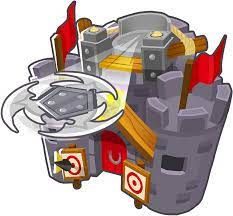 | A melhoria de cima da vila macaco aumenta o raio de influência da vila macaco, a velocidade de ataque e, para os macacos primários, aumenta ainda mais a velocidade de ataque e alcance, reduz o tempo de recarga de habilidades e concede melhorias 1 e 2 grátis. Também adiciona uma mega balista que dispara pelo mapa inteiro. |
| 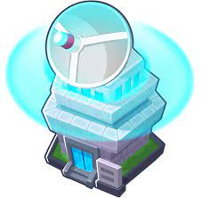 | A melhoria do meio da vila macaco impede que bloons regeneradores se regenerem quando entrarem no seu raio, concede visão de camuflados a todos os macacos no seu raio e também a capacidade de estourar todos os tipos de bloons. Nas duas últimas melhorias libera a habilidade ativável de aumentar a velocidade de ataque e poder de estouro de 50% para e 100% para todos os macacos. |
| 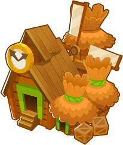 | O caminho de baixo da vila macaco reduz o preço de melhoria de todos os macacos no seu raio de até 15%, aumenta o dinheiro ganho por estouro, concede um macaco dardo grátis a cada rodada e absrove todas as fazendas de bananas ao redor para fazer a macacólpolis, uma vila macaco com maior raio de influência que gera dinheiro como uma fazenda de bananas. |
O macaco engenheiro possuí uma pistola de pregos e uma velocidade de ataque um pouco maior que a dor macaco dardo.
| Caminhos | Vantagens |
|---|---|
| 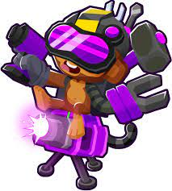 | O caminho de cima do macaco engenheiro faz com que ele posicione sentinelas que disparam junto com ele, na última melhoria ele posiciona sentinelas instáveis que disparam raios de plasma contra os bloons, e explodem quando acabam. |
| 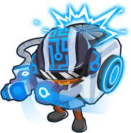 | O caminho do meio do macaco engenheiro faz ele dar mais dano a bloons classe MOAB e faz com que ele lance uma espuma na pista que remove camuflagem, regeneração e estoura bloons de chumbo. Nas últimas duas melhorias ele libera a habilidade de aumentar a velocidade de ataque de uma torre por um curto período, no último essa velocidade de ataque é reduzida porém permanente a cada uso. |
| 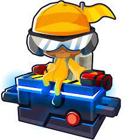 | O caminho de baixo do macaco engenheiro faz com que ele tenha duas pistolas de pregos, pregue os bloons na pista por um curto período e estoure bloons congelados. Nas últimas duas melhorias ele libera uma armadilha bloons, que suga os bloons para dentro e, quando cheia, retorna em dinheiro. Essa habilidade suga MOABs na última melhoria. |
O domador de feras é a mais nova torre do jogo, ele possuí a habilidade de domar peixes, passaros e dinossauros para lutarem por ele. Ele também pode combinar sua criatura com a de outro domador de feras para fortalecê-la.
| Caminhos | Vantagens |
|---|---|
| 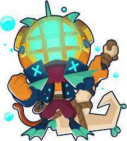 | O caminho de cima do domador de feras só pode ser usado se houver água por perto. Ele chama uma piranha para lutar por ele, que depois evoluí para uma barracuda, depois para um tubarão branco, com a habilidade de (se fortalecido no máximo) puxar MOABs para o fundo do mar, depois para uma orca com a habilidade de (se fortalecida no máximo) puxar ZOMGs para o fundo do mar, e, por último, um megalodon que pode puxar até BADs para o fundo do mar (começa a não puxar BADs para o fundo do mar a partir da rodada 146). |
| 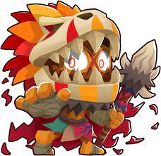 | O caminho do meio do domador de feras chama um dinossauro pequeno que ataca os bloons com suas garras, que depois evolui para um dinossauro um pouco maior capaz de estourar bloons de chumbo com seus dentes, depois se transforma em um velociraptor que causa mais dano a bloons atordoados, depois para um tiranossauro rex que libera a habilidade ativável de pisar no chão e atordoar os bloons em um grande raio, e, por último, um gigantossauro que causa ainda mais dano aos bloons e MOABs. A habilidade pisão agora atinge o mapa inteiro e dura mais tempo. |
| 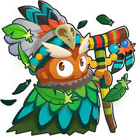 | O caminho de baixo do domador de feras chama um Falcão-Gerifalte que pega os bloons com suas garras e os leva devolta para o local determinado pelo jogador. Ele depois evoluí para o Corujão, ganhando a habilidade de enxergar bloons camuflados e pode agarrar bloons de cerâmica e chumbo, depois evoluí para a Águia-Real, que pode agarrar grandes quantidades de bloons de uma vez, depois evoluí para o Condor-Gigante, podendo agarrar bloons classe MOAB menores, e, por último, o Pouakai, que pode agarrar qualquer tipo de bloon, exceto BADs. |